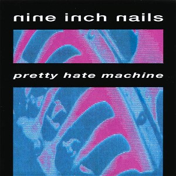

Pretty Hate Machine (1989)
Industrial
| Artist | Nine Inch Nails |
|---|---|
| Year | 1989 |
| Genre | Industrial |
| Tracks | 10 |
Track List
| 1 | Head Like A Hole | 4:59 |
| 2 | Terrible Lie | 4:39 |
| 3 | Down In It | 3:46 |
| 4 | Sanctified | 5:48 |
| 5 | Something I Can Never Have | 5:53 |
| 6 | Kinda I Want To | 4:34 |
| 7 | Sin | 4:05 |
| 8 | That's What I Get | 4:30 |
| 9 | The Only Time | 4:47 |
| 10 | Ringfinger | 5:42 |